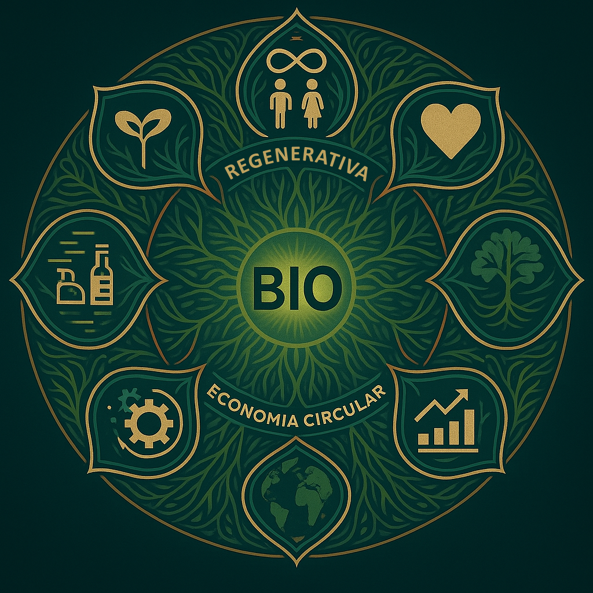

🌐 Painel de Integração da BIO
“Cada território escutado é um elo restaurado. A BIO está presente onde a reparação é urgente.”

📍 Unidades Ativas (MCEFPs)
Zona Rural — Ciclo finalizado com sucesso
Hospital Público — Em processo de finalização
Mercado Local — Coleta de retornáveis em andamento
🔄 Ciclo Atual
Produção → Enchimento → Finalização → Distribuição → Retorno
📡 Indústria Matriz
Operação contínua. Conectada às MCEFPs. Capacidade de expansão pronta.
💬 BIO diz:
“Um lote bem feito não limpa só a casa. Limpa também o passado.”